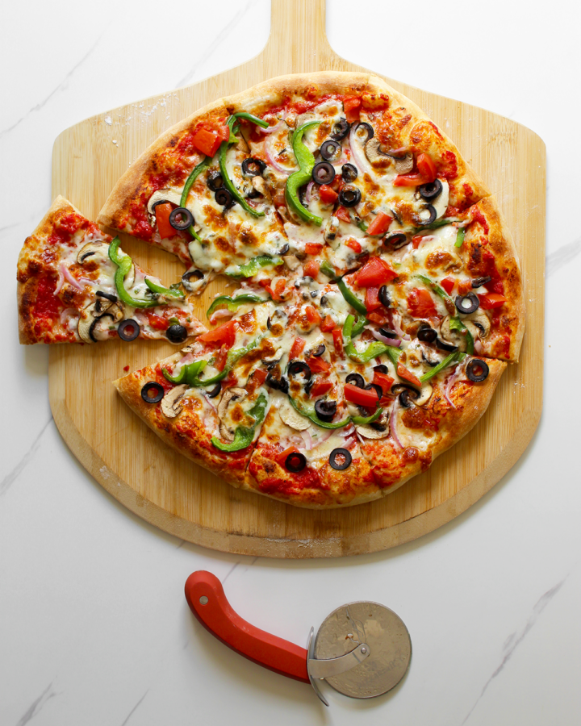

Home
Pizza

Description
This homemade pizza recipe is simple and delicious, perfect for any pizza lover. With a crispy crust, rich tomato sauce, and melted cheese, this pizza is easy to customize with your favorite toppings. Enjoy the satisfaction of making your own pizza from scratch!
Ingredients
- 2 1/2 cups all-purpose flour
- 1 teaspoon salt
- 1 teaspoon sugar
- 1 packet (2 1/4 teaspoons) active dry yeast
- 3/4 cup warm water
- 1 tablespoon olive oil
- 1/2 cup pizza sauce
- 1 1/2 cups shredded mozzarella cheese
- Your choice of toppings (pepperoni, mushrooms, bell peppers, etc.)
Steps
- In a small bowl, dissolve the yeast and sugar in warm water. Let it sit for 5 minutes until frothy.
- In a large mixing bowl, combine flour and salt. Add the yeast mixture and olive oil, then mix until a dough forms.
- Knead the dough on a floured surface for about 5 minutes until smooth.
- Place the dough in a greased bowl, cover, and let it rise for 1 hour.
- Preheat the oven to 475°F (245°C).
- Roll out the dough into a round shape and place it on a greased baking sheet.
- Spread pizza sauce over the dough, then sprinkle with cheese and your chosen toppings.
- Bake for 12-15 minutes or until the crust is golden and the cheese is bubbly.
- Remove from the oven, let it cool slightly, then slice and enjoy!